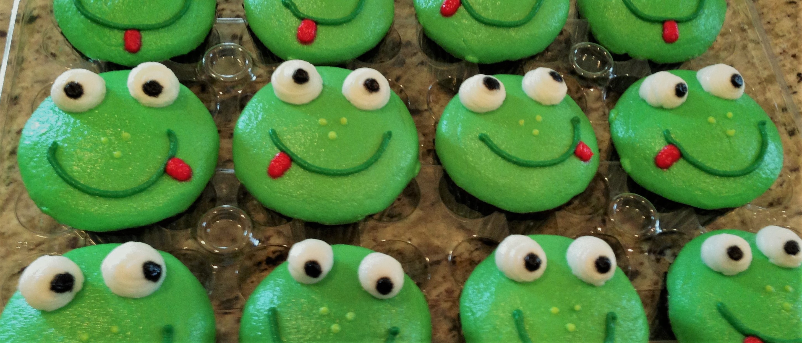

Ingredients for 24 servings
| Vanilla frosting |
16 ounce |
| Green food coloring |
6 drops |
| Green decorator sugar |
¼ cup |
| Large marshmallows |
12 regulars |
| Semisweet chocolate chips |
48 eaches |
| Red food coloring |
1 drop |
Directions
- Bake cupcakes according to the directions on the package. Allow them to cool completely.
- Scoop 2/3 of the frosting into a small bowl and mix with green food coloring. Frost the cupcakes. Sprinkle some of the green sugar over the tops.
- Cut the marshmallows in half to make two circles. Dip half of each marshmallow piece into water and dip into the green sugar to make the eyelids. The remaining white will be the eyes. Place on the cupcakes. Use a little bit of white icing to glue a chocolate chip into the center of each eye for the pupil.
- Cut the marshmallows in half to make two circles. Dip half of each marshmallow piece into water and dip into the green sugar to make the eyelids. The remaining white will be the eyes. Place on the cupcakes. Use a little bit of white icing to glue a chocolate chip into the center of each eye for the pupil.